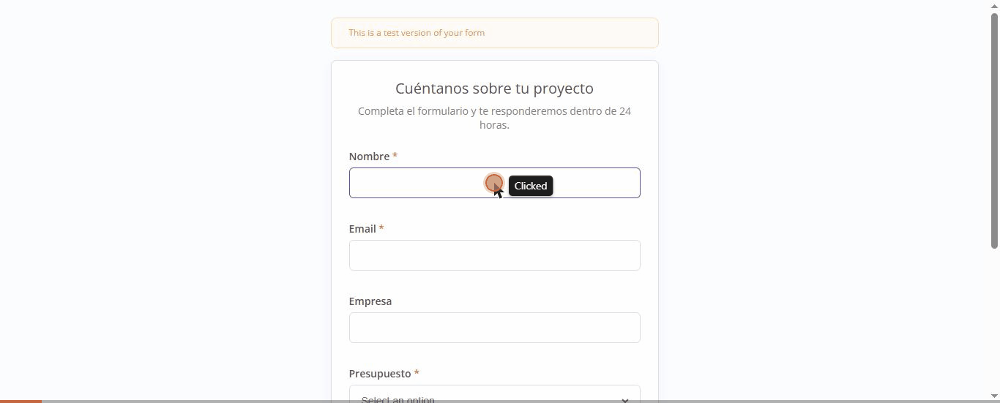
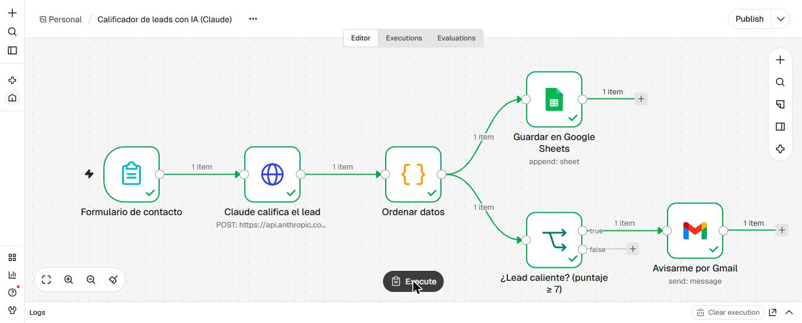
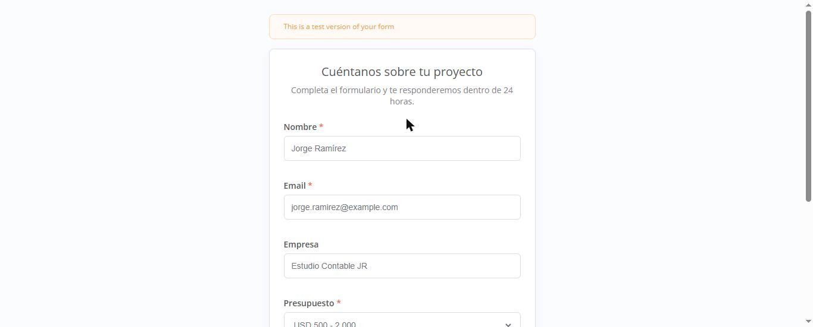
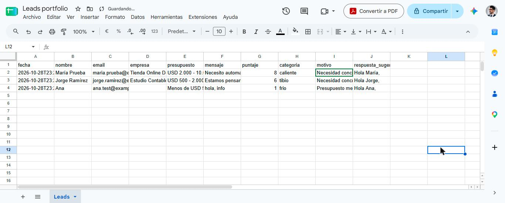
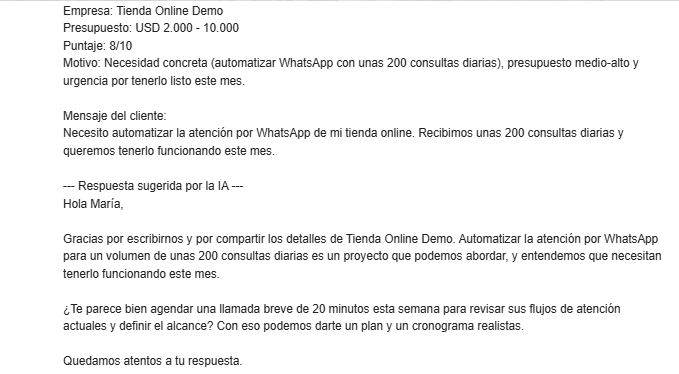

AI Lead Scorer
A website form that scores every inquiry from 1 to 10 within seconds, logs it in a spreadsheet, and sends an email alert only when a lead is worth a fast reply, with a draft response already written.

The problem
Agencies and freelancers get inquiries of very different quality: clients with budget and urgency mixed with vague messages and spam. Reviewing them one by one takes time, and good leads go cold when nobody replies the same day.
The solution
A six-step n8n workflow. Claude reads the form data and returns a score, a category, the reason, and a reply email in the contact's language. Every lead is logged; the Gmail alert only fires when the score is 7 or higher.
Test with four leads
Four test submissions with different profiles. Claude separated them with no hand-written rules, reading budget, need and urgency.
| Contact | Budget | Message | Score | Category | Alert? |
|---|---|---|---|---|---|
| Veterinary clinic | Over USD 10,000 | WhatsApp appointment booking for 3 locations, starting November | 9 | hot | Yes |
| Online store | USD 2,000 – 10,000 | WhatsApp support, 200 inquiries a day, needed this month | 8 | hot | Yes |
| Accounting firm | USD 500 – 2,000 | Client reminders, no set date | 6 | warm | No |
| No company | Under USD 500 | "hi, info" | 1 | cold | No |




Screenshots are from the Spanish-language build. The template available on Gumroad is the English version, tested end to end.
Results
- Each lead is scored and logged in about 3 to 7 seconds.
- Only valuable leads trigger an alert, so the inbox stays quiet.
- Every alert includes a draft reply to review and send.
- It adapts to another business by changing the prompt and the threshold, without touching the rest of the workflow.
Get the ready-to-import n8n template + setup guide on Gumroad
Demo built with test data. The workflow runs on a self-hosted n8n instance and uses Claude Haiku through the Anthropic API.